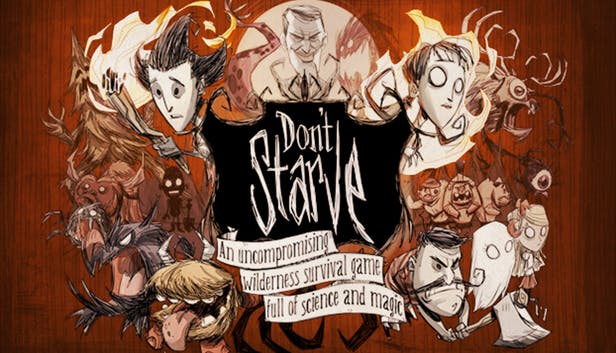
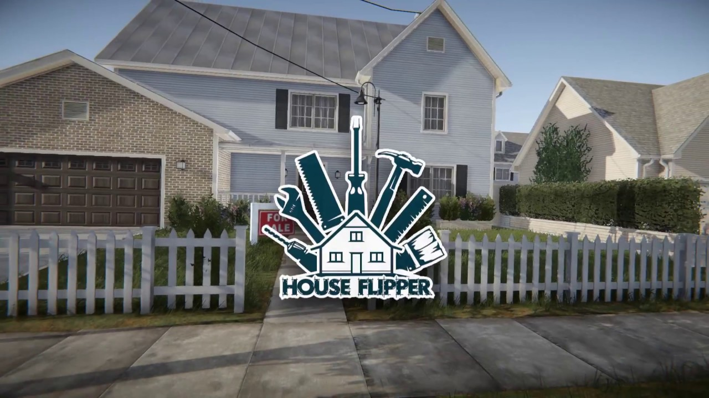

estos es el top 3 de mis juegos preferidos

Don't Starve
Es un videojuego de acción-aventura con elementos
de survival horror y roguelike lanzado en 2013. Es
uno de mis videojuegos favorito porque lo puedes
jugar con tus amigos, trabajando en e quipo para no
morir y recolectar todos los logros, disfrutando del
estilo tétrico del juego.

Minecraft
Es un videojuego de construcción, de tipo «mundo
abierto» o sandbox. Este juego me gusta mucho
porque también lo puedes jugar con tus amigos
compartiendo objetos y creaciones, este un juego
que se juega mas como en comunidad pero también
es muy personal.
